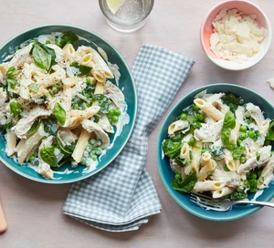

Creamy Chicken Pasta

Description
Try our crowd-pleasing creamy chicken pasta for your next family meal. It's packed with flavour and is easy for anyone to make, including children
Ingredients
- 300g dried penne
- 2 tsp olive oil
- 1 garlic clove, crushed
- 75g baby spinach
- 250g soft cheese
- 25g parmesan, optional
- 4 cooked chicken breasts (about 450g), shredded with a fork
- 100g frozen peas
- small bunch of parsley or basil, chopped
Steps
- Cook the pasta following pack instructions. Reserve 100ml of the water and drain the pasta in a colander.
- Meanwhile, heat the oil in a frying pan on a medium heat and fry the garlic and spinach for 3 mins until wilted. Add the soft cheese and heat until melted. Stir in most of the parmesan, then add the shredded chicken, peas and some of the pasta water. Bring to the boil and bubble for 2-3 mins until the chicken and peas are completely heated through.
- Add the pasta and stir until combined. Add more pasta water to loosen the sauce, if needed. Remove from heat, sprinkle over the remaining parmesan and parsley or basil to serve.